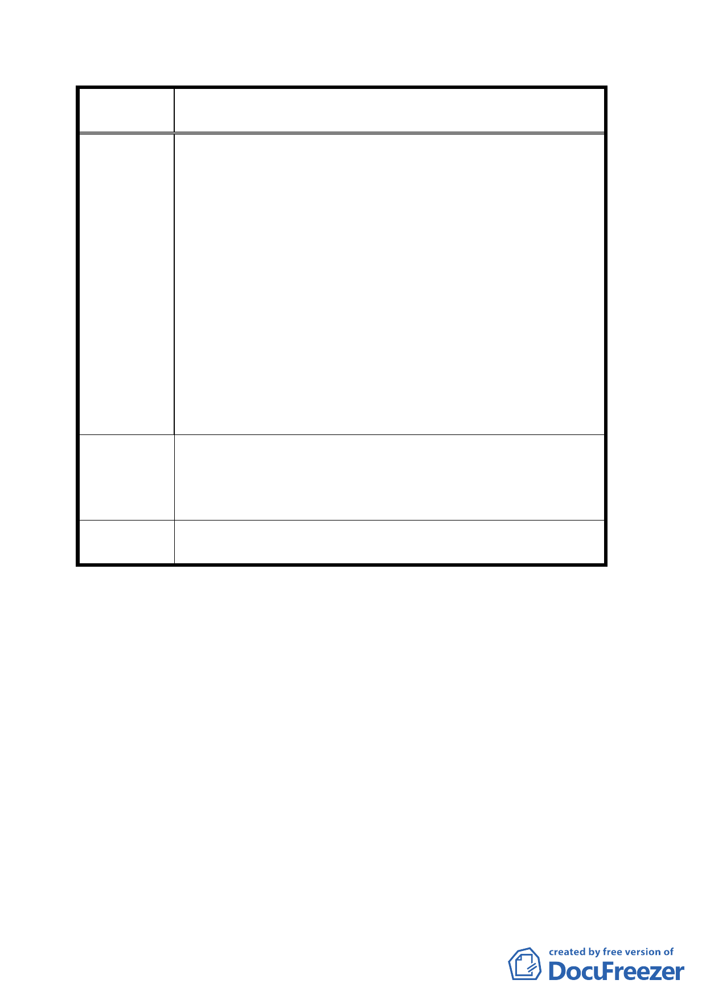

案
名
變更臺北市文山區萬隆段二小段瀝青拌合場用地及住宅區
（專案國宅用地）為學校用地計畫案
四、93 年 1 月 9 日由都發局北市都二字第 09330088500 號
函通知文山區公所，自 93.1.16 起公開展覽 30 天，瀝
青拌合場用地變更為學校用地計畫，於 93.2.4 晚間舉
辦說明會。
1. 地方居民前二次會議及高雄參觀後之問題討論，社區均
已明確表明；非反對設校，而是反對設校地點等相關意
見，為何仍未經意見答覆溝通，及相關書面評估報告等
資料？
2. 計畫既經地方表達強烈反對意見，為何仍能經府內通
報，逕行進入公告變更之「法定」程序？教育局嚴重違
背行政誠信原則。
3. 政府如此顢幹未據實反應民意，即強行進入行政程序，
置地方居民意見於不顧？使民眾疲於奔命應付所謂程
序會議，勞師動眾嚴重擾民，不無失職？！
1. 呈請責成教育局確實依「合法」相關程序辦理，正視社
建議辦法
區建議，確實反應民意，並以「惇敘高工校地」為優先
評選之地點，提出書面評估報告資料。
2. 還給社區「綠地公共空間」為優先考量。
擬建議處理
意見
同意撤回計畫案。
討論事項二
案名：擬劃定「台北市士林區蘭雅段一小段三八六地號等十八
筆土地為更新地區（更新單元）」計畫案
說明：
一、本案係市府於九十三年七月八日以府都新字第○九三一四
八六五六○○號函送到會。。
二、法令依據：都市計畫法第六十六條、都市更新條例第五條、
第六條（第一款第二款及第六款）第八條、第十一條曁都
市更新條例施行細則第五條。
一二